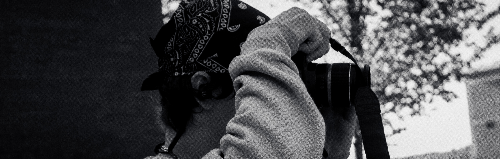

I'm Oleg Yershov, a photographer & designer based in Lowell, MA. I run Yershov Studio as a space to showcase my image-based storytelling, which includes independent, collaborative, and commissioned work.
My photography centers around experimental & editorial-style portraiture, emphasized by controlled lighting. I strive to create bold, high-impact work, using lighting, styling, and composition to create a striking visual narrative. I do indoor & outdoor photoshoots, focusing on creating images that feel personal and cinematic. I have experience with portraiture, real estate photography, and product photography.
My graphic design practice is rooted in building visual systems that often balance concept, image, and typography. I have professional experience logos, branding, and physical print, as well as personalized designs and posters.
Much of my work explores the relationship between photography and design, and I often combine ideas from both to push visual narrative within my work.